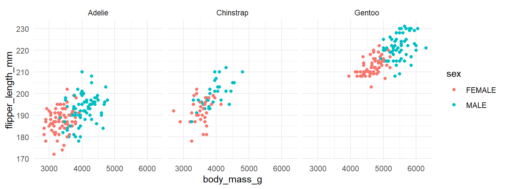

Often we want to compare graphs across multiple categories. One good strategy to do this is to make small multiples, which is essentially replicating the same graph for each group several times in different panels. This is probably best explained by doing an example.
7.1Scatterplot small multiple
Here, we load in the penguins.csv dataset. This data shows the size of various penguins culmen (the beak) and flippers:
# A tibble: 6 x 7
species island culmen_length_mm culmen_depth_mm flipper_len~1 body_~2 sex
<chr> <chr> <dbl> <dbl> <dbl> <dbl> <chr>
1 Adelie Torgersen 39.1 18.7 181 3750 MALE
2 Adelie Torgersen 39.5 17.4 186 3800 FEMA~
3 Adelie Torgersen 40.3 18 195 3250 FEMA~
4 Adelie Torgersen 36.7 19.3 193 3450 FEMA~
5 Adelie Torgersen 39.3 20.6 190 3650 MALE
6 Adelie Torgersen 38.9 17.8 181 3625 FEMA~
# ... with abbreviated variable names 1: flipper_length_mm, 2: body_mass_g
The dataset contains three different species:
table(penguins$species)
Adelie Chinstrap Gentoo
146 68 119
We might be interested in examining how body mass is associated with flipper length across species and across sex. Here, we have two different columns containing categorical variables. We have sex and species. If we wanted to show all of this on just one scatterplot, we could change the color of the points to represent species, and the shape of the points to represent sex. We change the shape by a column using shape= inside of aes():
ggplot(penguins, aes(x = body_mass_g, y = flipper_length_mm, color = species, shape = sex)) +geom_point() +theme_classic()
The problem with this sort of graph is that it is far too cluttered. Using shape to distinguish categories isn’t that useful or helpful. You really have to squint at the graph to work out what is a circle and what is a triangle.
An alternative approach is to make small multiples. We create a separate scatterplot for each species. Here, we color our points by sex with color=sex inside aes(). We add to our code the line facet_wrap(~species) to tell ggplot() to make separate scatterplots for each species. Please note the ~ that comes before the column name that you wish to make separate plots for:
ggplot(penguins, aes(x = body_mass_g, y = flipper_length_mm, color = sex)) +geom_point() +theme_minimal() +facet_wrap(~ species)

You may notice that all the scatterplots have the same range of values on the x-axis. Technically, this is the most appropriate approach as it enables you to make comparisons across groups more easily. However, if you want to fit the data on each scatterplot to cover the whole canvas, you can make the axes unfixed by adding scales="free" to your facet_wrap() command:
ggplot(penguins, aes(x = body_mass_g, y = flipper_length_mm, color = sex)) +geom_point() +theme_minimal() +facet_wrap(~ species, scales ="free")
7.2Line graph small multiple
We can also make small multiples for line graphs. Let’s illustrate this using the lifeexp_all.csv dataset.
le <-read_csv("data_raw/lifeexp_all.csv")head(le)
# A tibble: 6 x 6
country continent year lifeExp pop gdpPercap
<chr> <chr> <dbl> <dbl> <dbl> <dbl>
1 Afghanistan Asia 1952 28.8 8425333 779.
2 Afghanistan Asia 1957 30.3 9240934 821.
3 Afghanistan Asia 1962 32.0 10267083 853.
4 Afghanistan Asia 1967 34.0 11537966 836.
5 Afghanistan Asia 1972 36.1 13079460 740.
6 Afghanistan Asia 1977 38.4 14880372 786.
In this dataset we have a column giving the life expectancy (lifeExp) of various countries that are in the country column. We also have a year column that goes from 1952 to 2007 at five year intervals. Consequently, we could plot a line graph of year on the x-axis and life expectancy on the y-axis. We could make separate lines for each country. As there are far too many countries to plot, it is not worth making each one a separate color. Because of this, rather than putting color=country into aes() to indicate to make separate lines for each country, we’ll put group=country. This will make separate lines for each country, but make them all the same color. If we make them a light color and a bit transparent, it will look best:
ggplot(le, aes(x = year, y = lifeExp, group = country)) +geom_line(color="cornflowerblue", alpha=0.2) +theme_minimal()
This gives us a sense of the overall pattern of life expectancies from 1952 to 2007. The trend for most countries is generally upwards, though there are some countries that have big crashes.
We also have another categorical variable in our dataset. There is a column called continent. We could replot this line graph, but separate the plots based on which continent the lines/countries belong to. We do that again using facet_wrap(~continent).
ggplot(le, aes(x = year, y = lifeExp, group = country)) +geom_line(color="cornflowerblue", alpha=0.5) +theme_minimal() +facet_wrap(~continent)
Because there are fewer lines on each graph, we upped the alpha to 0.5 to make the lines a bit darker on this plot.
If you wish to make the lines belonging to each panel different colors from each other, you can add color=continent to your aes(). You have to remove the color from geom_line() to make this work:
ggplot(le, aes(x = year, y = lifeExp, group = country, color = continent)) +geom_line( alpha=0.5) +theme_minimal() +facet_wrap(~continent)+xlab("Year") +ylab("Life Expectancy")